1. Choose the correct answer
1. Man-made radioactivity is also known as dash
a. Induced radioactivity
b. Spontaneous radioactivity
c. Artificial radioactivity
d. a & c
2. Unit of radioactivity is dash
a. roentgen
b. curie
c. becquerel
d. all the above
3. Artificial radioactivity was discovered by
a. Becquerel
b. Irene Curie
c. Roentgen
d. Neils Bohr
4. In which of the following, no change in mass number of the daughter nuclei takes place
1) α decay
2) β decay
3) γ decay
4) neutron decay
(a). 1 is correct
(b). 2 and 3 are correct
(c). 1 and 4 are correct
(d) 2 and 4 are correct
5. dash isotope is used for the treatment of cancer.
a. Radio Iodine b. Radio Cobalt c. Radio carbon d. Radio Nickel
6. Gamma radiations are dangerous because
a. it affects eyes & bones b. it affects tissues c. it produces genetic disorder
d. it produces enormous amount of heat
7. dash aprons are used to protect us from gamma radiations
a. Lead oxide b. Iron c. Lead d. Aluminium
8. Which of the following statements is/are correct?
1.) α particles are photons
2.) Penetrating power of γ radiation is very low
3.) Ionization power is maximum for α rays
4.) Penetrating power of γ radiation is very high
a. (1) & (2) are correct
b. (2) & (3) are correct
c. (4) only corrects
d. (3) & (4) are correct
9. Proton - Proton chain reaction is an example of dash
a. nuclear fission
b. α – decay
c. nuclear fusion
d. β - decay
10. In the nuclear reaction 6 X 12 under goes alpha decay yields z Y A, the value of A & Z.
(a). 8, 6
(b). 8, 4
(c). 4, 8
(d). cannot be determined with the given data
11. Kamini reactor is located at
a. Kalpakkam
b. Koodankulam
c. Mumbai
d. Rajasthan
12. Which of the following is or are correct?
1. Chain reaction takes place in a nuclear reactor and an atomic bomb.
2. The chain reaction in a nuclear reactor is controlled
3.The chain reaction in a nuclear reactor is not controlled
4. No chain reaction takes place in an atom bomb
a. (1) only correct
b. (1) & (2) are correct
c. (4) only correct
d. (3) & (4) are correct
2. Fill in the blanks
1. One roentgen is equal to dash disintegrations per second dash
2. Positron is a dash.
3.Anemia can be cured by dash isotope.
4. Abbreviation of ICRP dash.
5. dash is used to measure exposure rate of radiation in humans.
6. dash has the greatest penetration power.
7. Z Y A yields Z + 1 Y A + X; Then, X is dash.
8. z X A yields z Y A This reaction is possible in dash decay.
9. The average energy released in each fusion reaction is about dash Joule.
10. Nuclear fusion is possible only at an extremely high temperature of the order of dash Kelvin.
11. The radio isotope of dash helps to increase the productivity of crops.
12. If the radiation exposure is 100 Roentgen, it may cause dash.
3. State whether the following statements are true or false: If false, correct the statement
1. Plutonium -239 is a fissionable material.
2. Elements having atomic number greater than 83 can undergo nuclear fusion.
3. Nuclear fusion is more dangerous than nuclear fission.
4. Natural uranium U-238 is the core fuel used in a nuclear reactor.
5. If a moderator is not present, then a nuclear reactor will behave as an atom bomb.
6. During one nuclear fission on an average, 2 to 3 neutrons are produced.
7. Einstein’s theory of mass energy equivalence is used in nuclear fission and fusion.
4. Match the following
Match: 1
a. BARC - Kalpakkam
b. India’s first atomic power - Apsara station
c. IGCAR - Mumbai
d. First nuclear reactor in India - Tarapur
Match: 2
a. Fuel - lead
b. Moderator - heavy water
c. Control rods - cadmium rods
d. Shield - uranium
Match: 3
a. Soddy Fajan - Natural radioactivity
b. Irene Curie - Displacement law
c. Henry Becquerel- Mass energy equivalence
d. Albert Einstein- Artificial Radioactivity
Match: 4
a. Uncontrolled fission- Hydrogen Bomb reaction
b. Fertile material - Nuclear Reactor
c. Controlled fission - Breeder reactor reaction
d. Fusion reaction - Atom bomb
Match: 5
a. Iron – 59- Age of fossil
b. Iodine – 131- Function of Heart
c. sodium – 24- Leukaemia
d. Carbon – 14- Thyroid disease
5.. Arrange the following in the correct sequence:
1. Arrange in descending order, on the basis of their penetration power
Alpha rays, beta rays, gamma rays, cosmic rays
2. Arrange the following in the chronological order of discovery
Nuclear reactor, radioactivity, artificial radioactivity, discovery of radium.
6. Use the analogy to fill in the blank
1. Spontaneous process: Natural Radioactivity, Induced process: dash.
2. Nuclear Fusion: Extreme temperature, Nuclear Fission: dash.
3. Increasing crops: Radio phosphorous, Effective functioning of heart: dash.
4. Deflected by electric field: α ray, Null Deflection: dash.
7. Numerical problems:
1. 88 Ra 226 experiences three α - decay. Find the number of neutrons in the daughter element.
2. A cobalt specimen emits induced radiation of 75.6 millicurie per second. Convert this disintegration in to becquerel (one curie = 3.7 × 10 power10 Bq)
8. Assertion and reason type questions:
Mark the correct choice as
(a) If both the assertion and the reason are true and the reason is the correct explanation of the assertion.
(b) If both the assertion and the reason are true, but the reason is not the correct
explanation of the assertion.
(c) Assertion is true, but the reason is false.
(d) Assertion is false, but the reason is true.
1.Assertion: A neutron impinging on U235, splits it to produce Barium and Krypton.
Reason: U - 235 is a fissile material.
2. Assertion: In a β - decay, the neutron number decreases by one.
Reason: In β - decay atomic number increases by one.
3. Assertion: Extreme temperature is necessary to execute nuclear fusion.
Reason: In a nuclear fusion, the nuclei of the reactants combine releasing high energy.
4.Assertion: Control rods are known as 'neutron seeking rods'
Reason: Control rods are used to perform sustained nuclear fission reaction
9. Answer in one or two words (VSA)
1. Who discovered natural radioactivity?
2. Which radioactive material is present in the ore of pitchblende?
3. Write any two elements which are used for inducing radioactivity?
4. Write the name of the electromagnetic radiation which is emitted during a natural radioactivity.
5. If A is a radioactive element which emits an α - particle and produces 104Rf 259. Write the atomic number and mass number of the element A.
6. What is the average energy released from a single fission process?
7. Which hazardous radiation is the cause for the genetic disease?
8. What is the amount of radiation that may cause death of a person when exposed to it?
9. When and where was the first nuclear reactor built?
10. Give the SI unit of radioactivity.
11. Which material protects us from radiation?
10. Answer the following questions in few sentences.
1. Write any three features of natural and artificial radioactivity.
2. Define critical mass.
3. Define one roentgen.
4. State Soddy and Fajan’s displacement law.
5. Give the function of control rods in a nuclear reactor.
6. In Japan, some of the new born children are having congenital diseases. Why?
7. Mr. Ramu is working as an X - ray technician in a hospital. But he does not wear the lead aprons. What suggestion will you give to Mr. Ramu?
8. What is stellar energy?
9. Give any two uses of radio isotopes in the field of agriculture?
XI. Answer the following questions in detail.
1. Explain the process of controlled and uncontrolled chain reactions.
2. Compare the properties of alpha, beta and gamma radiations.
3. What is a nuclear reactor? Explain its essential parts with their functions.
XII. HOT Questions:
1. Mass number of a radioactive element is 232 and its atomic number is 90. When this element undergoes certain nuclear reactions, it transforms into an isotope of lead with a mass number 208 and an atomic number 82. Determine the number of alpha and beta decay that can occur.
2. 'X – rays should not be taken often'. Give the reason.
3. Cell phone towers should be placed far away from the residential area – why?
REFERENCE BOOKS
1. Physics concepts and connections – by Art Hobson Edition: Pearson education
2. Modern Physics – by Dr. R Murugesan &Er. Kiruthiga Sivaprasath–S.Chand publications
INTERNET RESOURCES
1. https://physics.columbia.edu/research/nu- clear physics
2. http://www.newworldencyclopedia.org/ entry/Nuclear_physics
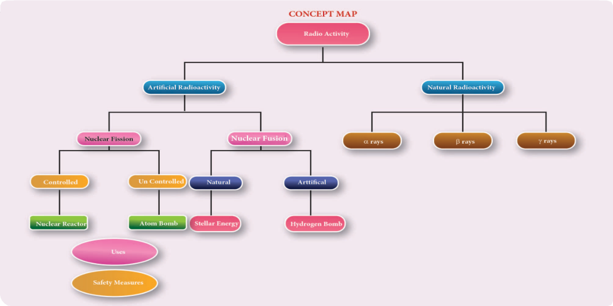
At the end of the lesson the students will be able to:
You have learnt, in your lower classes that matter is around us everywhere. Matter is made of atoms. Curiously the idea of atom was first proposed by the Greek philosophers in the fifth century BC (BCE). But their theory was more philosophical than scientific.
The first scientific theory of the atom was proposed by John Dalton. Few of the postulates of Dalton’s theory about an atom were found incorrect by the later on studies made by J.J. Thomson, Rutherford, Neils Bohr and Schrodinger. In the light of the result of the research most of the limitations of the Dalton’s theory were removed and a new theory known as the modern atomic theory was put forward. ‘The main postulates of modern atomic theory’ are as follows:
The modern atomic theory is the basis for all the studies of chemical and physical processes that involve atoms. You have studied the most fundamental ideas about an atom in your lower classes. Let us discuss some more concepts about atoms in this lesson.
As you know, anything that has mass and occupies space is called matter. Atoms are the building blocks of matter. Since matter has mass, it must be due to its atoms. According to the modern atomic theory, an atom contains subatomic particles such as protons, neutrons and electrons. Protons and neutrons have considerable mass, but electrons don't have such a considerable mass. Thus, the mass of an atom is mainly contributed by its protons and neutrons and hence the sum of the number of protons and neutrons of an atom is called its mass number.
Individual atoms are very small, and it is difficult to measure their masses. You can measure the mass of macroscopic materials in gram or kilogram. The mass of an atom is measured in atomic mass unit (amu).
Atomic mass unit is one-twelfth of the mass of a carbon-12 atom; an isotope of carbon, which contains 6 protons and 6 neutrons.
(Note: The symbol ‘amu’ is no longer used in the modern system and instead, it uses the symbol ‘u’ to denote unified atomic mass. The mass of a proton or neutron is approximately 1 amu).
As an atom is very small, its absolute mass cannot be determined directly. The early pioneers of chemistry used to measure the atomic mass of an atom relative to an atom of another element. They measured the masses of equal number of atoms of two or more elements at a time, to determine their relative masses. They established one element as a standard, gave it an arbitrary value of atomic mass and using this value they measured the relative mass of other elements. The mass obtained by this way is called relative atomic mass. In the beginning, the mass of hydrogen atom was chosen as a standard and masses of other atoms were compared with it, because of the existence of isotopic character of hydrogen (1H1, 1H2, 1H3). Later hydrogen atom was replaced by oxygen atom as the standard. Now, the stable isotope of carbon (C-12) with atomic mass 12 is used as the standard for measuring the relative atomic mass of an element.
Relative atomic mass of an element is the ratio between the average mass of its isotopes to
1 by 12 th part of the mass of a carbon-12 atom. It is denoted as Ar. It is otherwise called “Standard Atomic Weight”.
Relative Atomic Mass
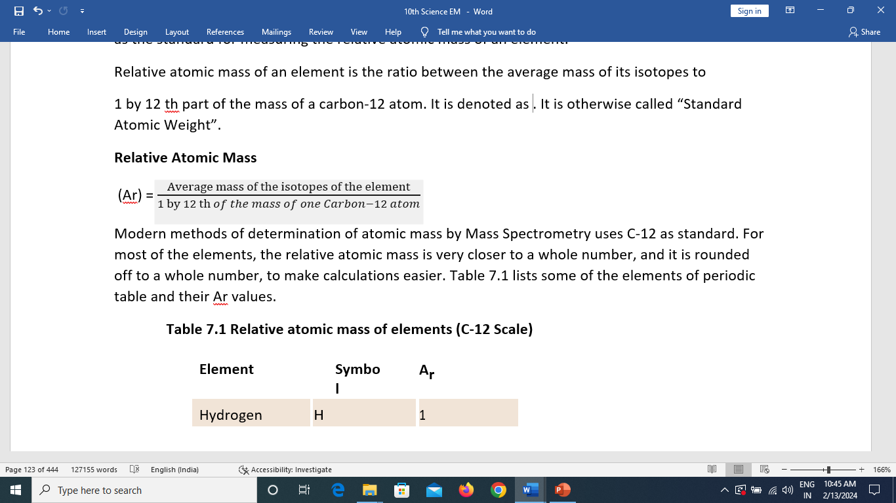
Modern methods of determination of atomic mass by Mass Spectrometry uses C-12 as standard. For most of the elements, the relative atomic mass is very closer to a whole number, and it is rounded off to a whole number, to make calculations easier. Table 7.1 lists some of the elements of periodic table and their Relative Atomic mass values.
Table 7.1 Relative atomic mass of elements (C-12 Scale)
Element |
Symbol |
Relative atomic mass |
Hydrogen |
H |
1 |
Carbon |
C |
12 |
Nitrogen |
N |
14 |
Oxygen |
O |
16 |
Sodium |
Na |
23 |
Magnesium |
Mg |
24 |
Sulphur |
S |
32 |
Do you Know
Relative Atomic Mass is only a ratio, so it has no unit. If the atomic mass of an element is expressed in grams, it is called as Gram Atomic Mass
Gram Atomic Mass of hydrogen = 1 gram
Gram Atomic Mass of carbon = 12 gram
Gram Atomic Mass of nitrogen = 14 gram
Gram Atomic Mass of oxygen = 16 gram
How can one measure the atomic mass of an element? It is somewhat more complicated because most of the naturally occurring elements exist as a mixture of isotopes, each of which has its own mass. Thus, it is essential to consider this isotopic mixture while calculating the atomic mass of an element.
The average atomic mass of an element is the weighted average of the masses of its naturally occurring isotopes.
But, the abundance of isotopes of each element may differ. So, the abundancy of all these isotopes is taken into consideration while calculating the atomic mass. Then, what do we mean by a weighted average?
Let us consider an element which exists as a mixture of 50% of an isotope having a mass of 9 amu, and 50% of another isotope having a mass of 10 amu. Then, its average atomic mass is calculated by the following equation:
Average atomic mass
= (Mass of 1st isotope × % abundance of 1st isotope) + (Mass of 2nd isotope ×% abundance of 2nd isotope) Thus, for the given element the average
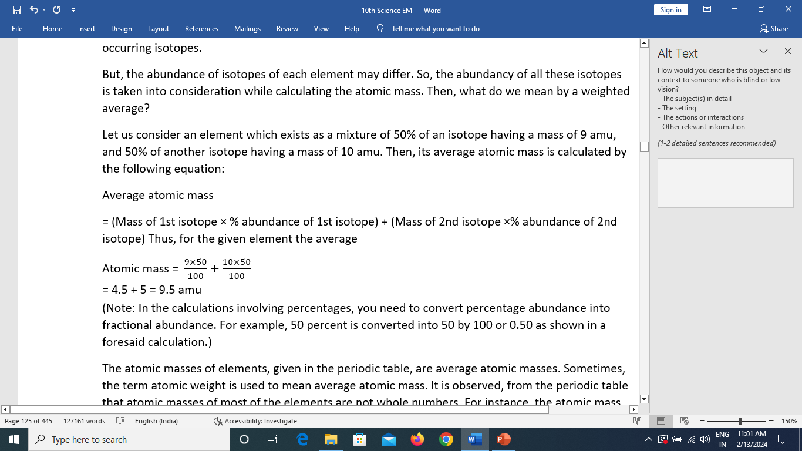
(Note: In the calculations involving percentages, you need to convert percentage abundance into fractional abundance. For example, 50 percent is converted into 50 by 100 or 0.50 as shown in a foresaid calculation.)
The atomic masses of elements, given in the periodic table, are average atomic masses. Sometimes, the term atomic weight is used to mean average atomic mass. It is observed, from the periodic table that atomic masses of most of the elements are not whole numbers. For instance, the atomic mass of carbon given in the periodic table is 12.01 amu, not 12.00 amu. The reason is that while calculating the atomic mass of carbon, both of its natural isotopes such as carbon-12. and carbon-13 are considered. The natural abundance of C-12 and C-13 are 98.90 % and 1.10 % respectively. The average of the atomic mass of carbon is calculated as follows:
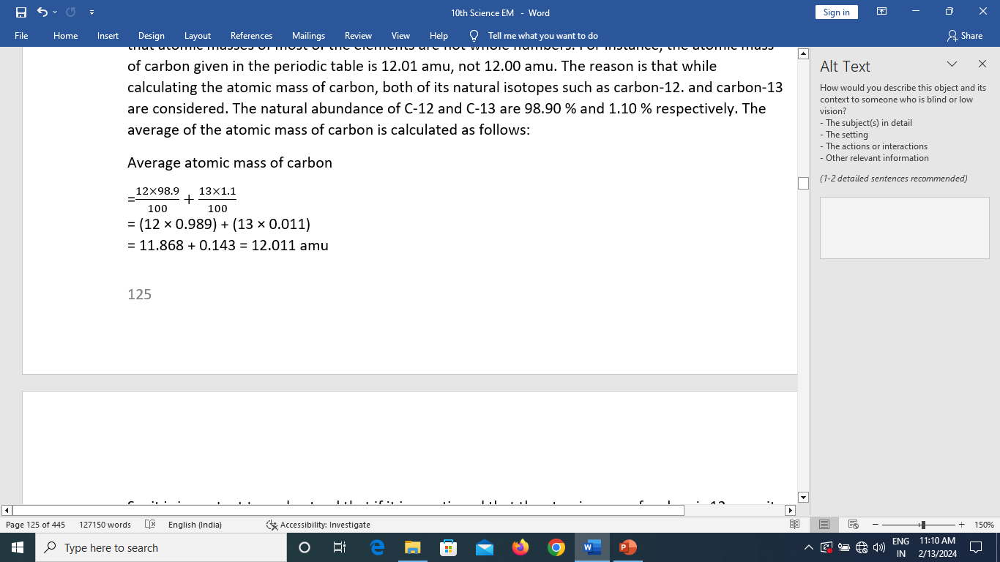
So, it is important to understand that if it is mentioned that the atomic mass of carbon is 12 amu, it refers to the average atomic mass of the carbon isotopes, not the mass of the individual atoms of carbon.
Table 7.2 Atomic mass of some elements
Atomic Number |
Name |
Symbol |
Atomic Mass unit(amu) |
1 |
Hydrogen |
H |
1.008 |
2 |
Helium |
H e |
4.003 |
3 |
Lithium |
L i |
6.941 |
4 |
Beryllium |
B e |
9.012 |
5 |
Boron |
B |
10.811 |
Calculation of average atomic mass – Solved Examples
Example 1: Oxygen is the most abundant element in both the Earth’s crust and the human body. It exists as a mixture of three stable isotopes in nature as shown in Table 7.3:
Table 7.3 Isotopes of oxygen
Isotope |
Mass (Atomic Mass Unit) |
% abundance |
8O16 |
15.9949 |
99.757 |
8O17 |
16.9991 |
0.038 |
8O18 |
17.9992 |
0.205 |
The atomic mass of
Oxygen = (15.9949×0.99757) + (16.9991×
0.00038) + (17.9992×0.00205)
=15.999amu.
Example 2: Boron naturally occurs as a mixture of boron-10 (5 protons + 5 neutrons) and boron-11 (5 protons + 6 neutrons) isotopes. The percentage abundance of B-10 is 20 and that of B-11 is 80. Then, the atomic mass of boron is calculated as follows:
Atomic mass of boron is equal to 10*20 divided by 100 +11*80 divided by 100
= (10 × 0.20) + (11 × 0.80)
= 2 + 8.8
= 10.8 amu
Except noble gases, atoms of most of the elements are found in the combined form with itself or atoms of other elements. It is called as a molecule. A molecule is a combination of two or more atoms held together by strong chemical forces of attraction,that is chemical bonds.
Activity 7.1
Complete the following table by filling the appropriate values /terms
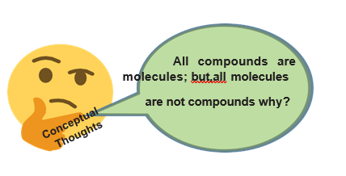
A molecule may contain atoms of the same element or may contain atoms of two or more elements joined in a fixed ratio, in accordance with the law of definite proportions. Thus, a molecule may be an element or a compound. If the molecule is made of similar kind of atoms, then it is called homoatomic molecule.
The molecule that consists of atoms of different elements is called heteroatomic molecule. A compound is a heteroatomic molecule. The number of atoms present in the molecule is called its ‘atomicity’.
Table 7.4 Classification of molecules
Atomicity |
Number of atoms present |
Name |
1 |
1 |
Monoatomic |
2 |
2 |
Diatomic |
3 |
3 |
Triatomic |
>3 |
>3 |
Polyatomic |
Let us consider oxygen. Oxygen gas exists in two allotropic forms: Oxygen (O2) and Ozone (O3). In oxygen molecule, there are two oxygen atoms. So, its atomicity is two. Since both the atoms are similar, oxygen (O2) is a homo diatomic molecule. Other elements
Element |
Number of Protons |
Number of Neutrons |
Mass Number |
Stable Isotopes(abundance) |
Atomic Mass(amu) |
|
7 |
|
|
N-14(99.6%) |
|
|
8 |
|
N-15(0.4%) |
||
Silicon |
14 |
|
28 |
Si-28(92.2%) |
|
14 |
|
|
Si-29(4.7%) |
||
|
16 |
|
Si-30(3.1%) |
||
|
17 |
|
|
Cl-35(75%) |
|
17 |
|
|
Cl-37(25%) |
that exist as diatomic molecules are hydrogen (H2), nitrogen (N2) and halogens: fluorine (F2), chlorine (Cl2), bromine (Br2) and iodine (I2).
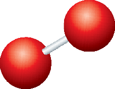
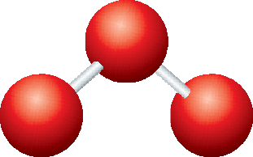
Oxygen Ozone
(Homo diatomic molecule) (homo triatomic molecule)
Figure 7.1 Homoatomic molecules
Ozone (O3) contains three oxygen atoms and hence it is called homo triatomic molecule. If a molecule contains more than three atoms, then it is called polyatomic molecule.
Consider hydrogen chloride. It consists of two atoms, but of different elements,that is hydrogen and chlorine. So, its atomicity is two. It is a hetero diatomic molecule. Similarly, the water molecule contains two hydrogen atoms and one oxygen atom. So, its atomicity is three. It is a hetero triatomic molecule.
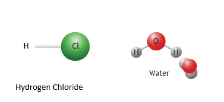
Figure 7.2 Heteroatomic molecules
Activity7.2
Classify the following molecules based on their atomicity and fill in the table:
Hydrogeniodide (H I),Sulphuric acid (H2 s o 4),Methane(CH4),Glucose(C6H12O6),Carbon monoxide(C O)
Molecule |
Di atomic |
Tri atomic |
Poly atomic |
Homo |
|
|
|
Hetero |
|
|
|
As the molecules are made of atoms, they also have their own mass. The mass of the molecule of an element or compound is measured in the C-12 scale and hence called relative molecular mass. The Relative Molecular Mass of a molecule is the ratio between the mass of one molecule of the substance to 1 by 12 th mass of an atom of Carbon 12
Do you Know
Relative Molecular Mass is only a ratio. So, it has no unit. If the molecular mass of a compound is expressed in grams, it is called Gram Molecular Mass.
Gram Molecular Mass of water =18gram
Gram Molecular Mass of carbon dioxide = 44gram
Gram Molecular Mass of ammonia=17gram
Gram Molecular Mass of HCl =36.5gram
The relative molecular mass is obtained by adding together the relative atomic masses of all the atoms present in a molecule.
Calculation of relative molecular mass – Solved examples:
Example 1: Relative molecular mass of sulphuric acid (H2SO4) is calculated as follows: Sulphuric acid contains 2 atoms of hydrogen, 1 atom of sulphur and 4 atoms of oxygen.
Therefore, Relative molecular mass of sulphuric acid = (2 × mass of hydrogen) + (1 × mass of sulphur) + (4 × mass of oxygen)
= (2 × 1) + (1 × 32) + (4 × 16)
= 98
That is one molecule of H2SO4 is 98 times as heavy as 1 by 12 the of the mass of a carbon 12.
Example 2: Relative molecular mass of water (H2O) is calculated as follows: A water molecule is made of 2 atoms of hydrogen and one atom of oxygen.
So, the relative molecular mass of water
= (2 × mass of hydrogen) + (1 × mass of oxygen)
= (2 × 1) + (1 × 16)
= 18
That is one molecule of H2O is 18 times as heavy as 1 by 12 th of the mass of a carbon 12.
Even though atoms are the basic components of molecules, they differ in many aspects when compared to the molecules. Table 7.5 consolidates the major difference between atoms and molecules.
Table 7.5 Difference between atoms and molecules
Atom |
Molecule |
An atom is the smallest particle of an element |
A molecule is the smallest particle of an element or compound. |
Atom does not exist in free state except in a noble gas |
Molecule exists in free state |
Except some of noble gas, other atoms are highly reactive |
Molecules are less reactive |
Atom does not have a chemical bond |
Atoms in a molecule are held by chemical bonds |
So far, we discussed about matters in terms of individual atoms and molecules. Atomic mass units provide a relative scale for the masses of the elements. Since the atoms have such small masses, no usable scale can be devised to weigh them in the calibrated units of atomic mass units. In any real situation, we deal with macroscopic samples containing enormous number of atoms. Therefore, it is convenient to have a special unit to describe a very large number of atoms. The idea of a ‘unit’ to denote a particular number of objects is not new. For example, the pair (2 items) and the dozen (12 items), are all familiar units. Chemists measure atoms and molecules in moles. So, you can now understand that ‘mole’ denotes a number of particles.
In the SI system, the mole (mol) is the amount of a substance that contains as many elementary entities (atoms, molecules, or other particles) as there are atoms in exactly 12 gram (or 0.012 kg) of the carbon 12 isotope. The actual number of atoms in 12 gram of carbon 12 is determined experimentally. This is called
Avogadro’s Number (NA), named after an Italian scientist Amedeo Avogadro who proposed its significance. Its value is 6.023 × 10 power 23. So, one mole of a substance contains 6.023 × 10 power 23 entities. Thus, 5 moles of oxygen molecules contain 5 × 6.023 ×10 power 23 molecules.
Mole Concept: The study of the collection of particles by using mole as the counting unit, in order to express the mass and volume of such unit particles in a bulk of matter is known as mole concept.
The number of moles of a substance can be calculated by various means depending on the data available, as follows:
Note:
STP-Standard Temperature and Pressure (273.15 Kelvin , 1.00 standard atmosphere pressure)
Mole of atoms:
One mole of an element contains6.023 × 10 power 23 atoms and it is equal to its gram atomic mass.
That is , one mole of oxygen contains 6.023 × 10 power 23 atoms of oxygen, and its gram atomic mass is 16 gram.
Mole of molecules:
One mole of matter contains 6.023 × 10 power 23 molecules, and it is equal to its gram molecular mass.
That is , one mole of oxygen contains 6.023 × 10 power 23 molecules of oxygen and its gram molecular mass is 32 gram.
Molar volume:
One mole of any gas occupies 22.4 litre or 22400 ml at S.T.P. This volume is called as molar volume.
Calculation of number of moles by Different modes
Number of moles
= Mass by Atomic Mass
= Mass by Molecular mass
= Number of Atoms by 6.023 × 10 power 23
= Number of Molecules by 6.023 × 10 power 23
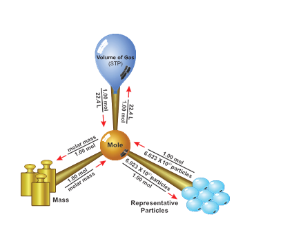
Figure 7.3 Mole concept
So, for, we were dealing with the number of entities present in a given substance. But many times, the information regarding the percentage of a particular element present in a compound is required.
The percentage composition of a compound represents the mass of each element present in 100 gram of the compound.
Let us understand the percentage composition of oxygen and hydrogen by taking the example of H2O. It can be calculated using the formula
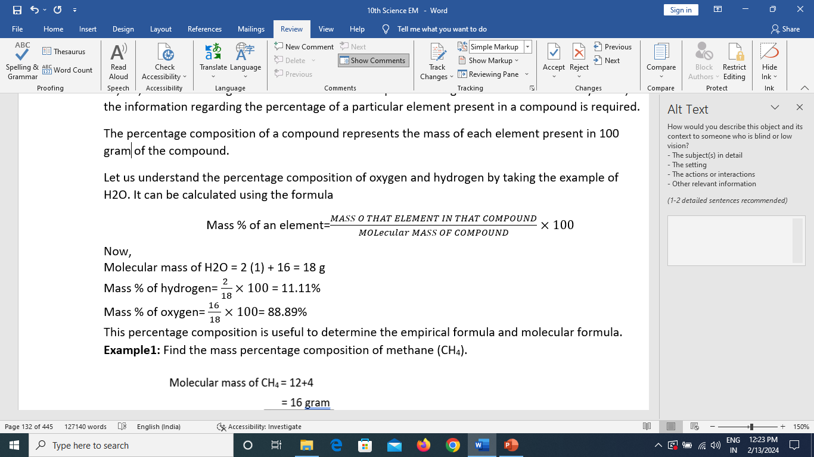
This percentage composition is useful to determine the empirical formula and molecular formula.
Example1: Find the mass percentage composition of methane (C H 4).
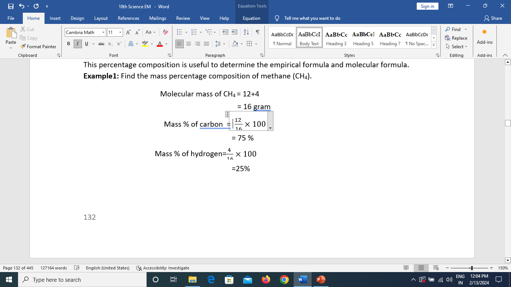
In 1811 Avogadro framed a hypothesis based on the relationship between the number of molecules present in equal volumes of gases in different conditions.
The Avogadro’s law states that “equal volumes of all gases under similar conditions of temperature and pressure contain equal number of molecules”
It follows that the volume of any given gas must be proportional to the number of molecules in it. If ‘V’ is the volume and ‘n’ is the number of molecules of a gas, then Avogadro law is represented, mathematically, as follows:
V is directly proportional to n
V equal to constant multiply by n
Thus, one litre (1 dm power 3) of hydrogen contains the same number of molecules as in one litre of oxygen, that is , the volume of the gas is directly proportional to the number of molecules of the gas.
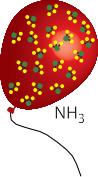
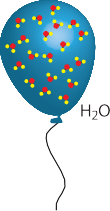
Figure 7.4 Avogadro Hypothesis
Explanation
Let us consider the reaction between hydrogen and chlorine to form hydrogen chloride gas
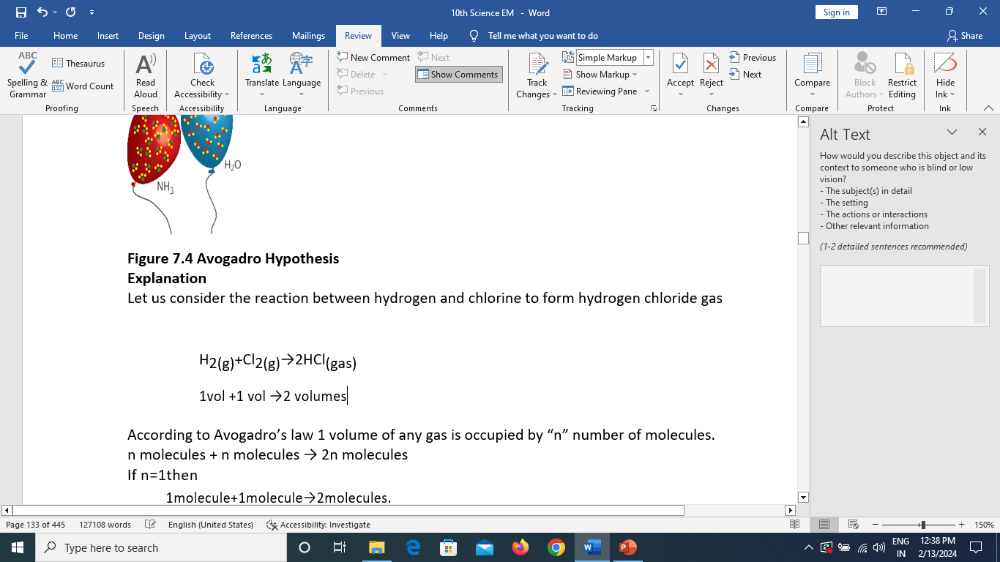
According to Avogadro’s law 1 volume of any gas is occupied by “n” number of molecules.
n molecules + n molecules → 2n molecules
If n=1then
1 molecule +1molecule →2 molecules.
½ molecule + ½molecule → 1 molecule
1 molecule of hydrogen chloride gas is made up of ½ molecule of hydrogen and ½ molecule of chlorine. Hence, the molecules can be subdivided. This law is in agreement with Dalton’s atomic theory.
Activity 7.3
Under same conditions of temperature and pressure if you collect 3 litres of O2, 5 litres of Cl2 and 6 litres of H2,
7.7 APPLICATIONS OF AVOGADRO’S LAW
1. Relative molecular mass: (Hydrogen scale)
The Relative Molecular Mass of a gas or vapour is the ratio between the mass of one molecule of the gas or vapour to mass of one atom of Hydrogen.
Vapour density is the ratio of the mass of a certain volume of a gas or vapour, to the mass of an equal volume of hydrogen, measured under the same conditions of temperature and pressure.
Vapour Density (V.D.)
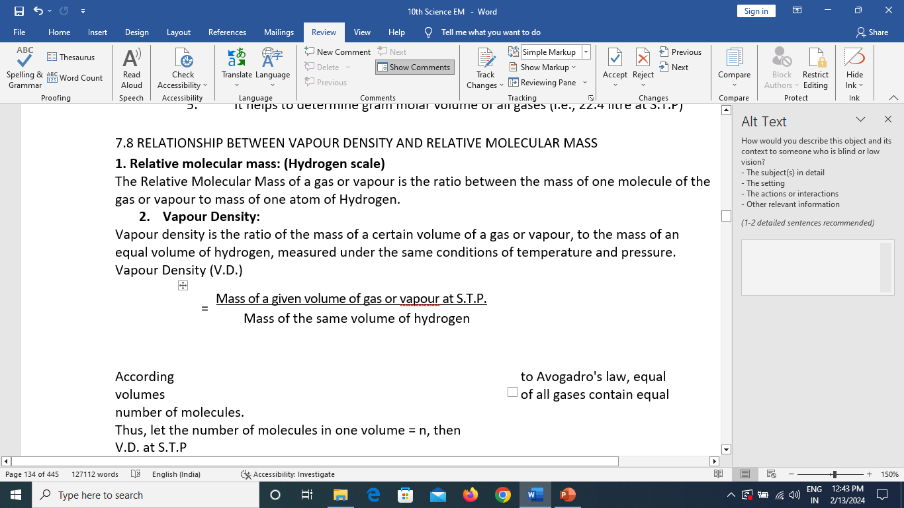
|
|
|
|
|
|
According to Avogadro's law, equal volumes of all gases contain equal number of molecules.
Thus, let the number of molecules in one volume = n, then
Vapour density at standard Temperature and pressure
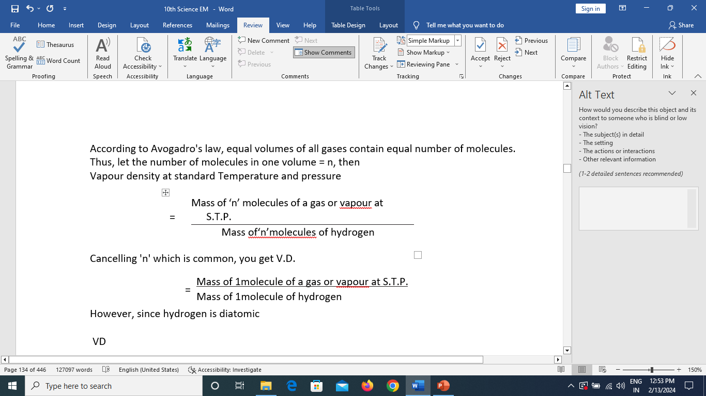
|
|
|
Cancelling 'n' which is common, you get
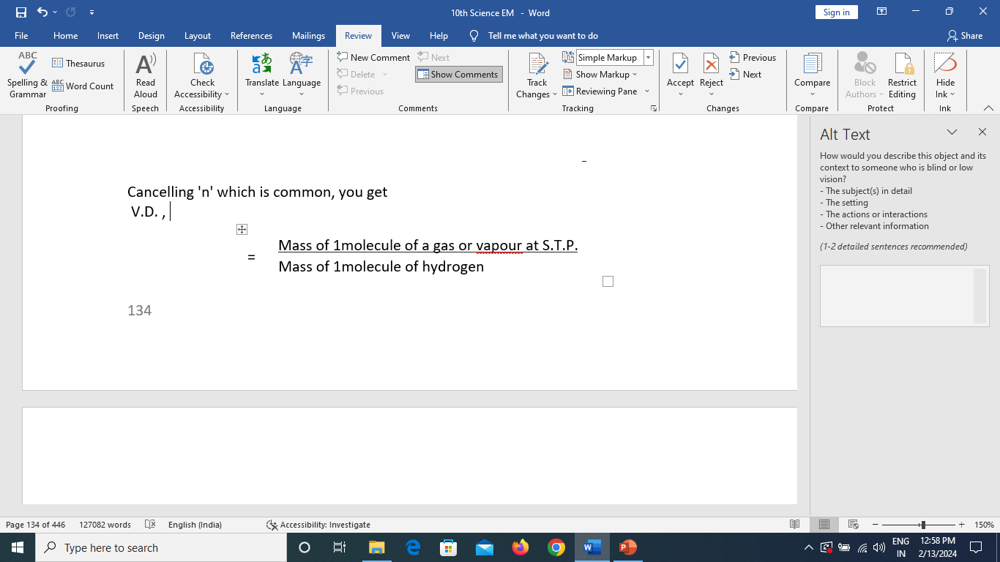
|
|
|
However, since hydrogen is diatomic
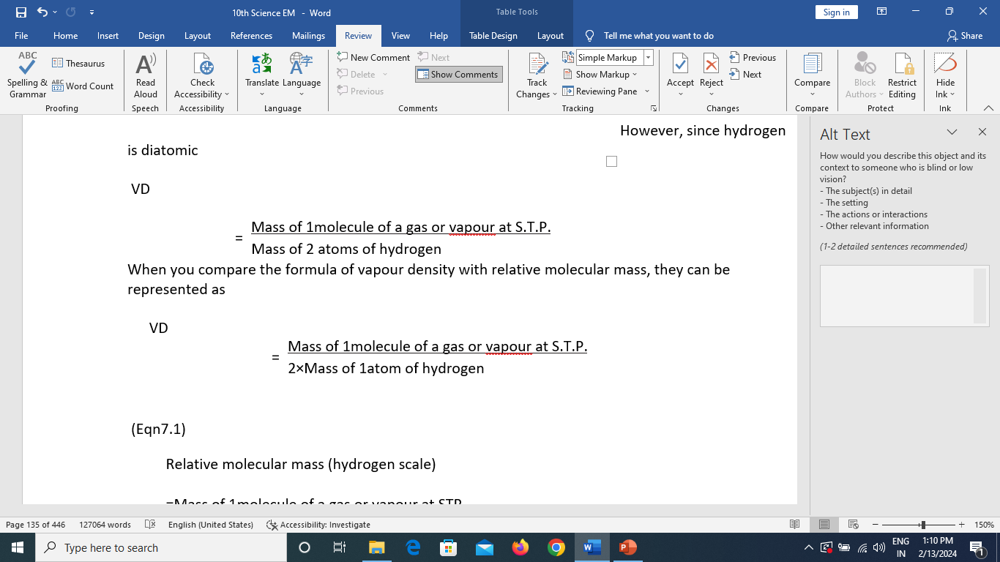
|
|
|
When you compare the formula of vapour density with relative molecular mass, they can be represented as
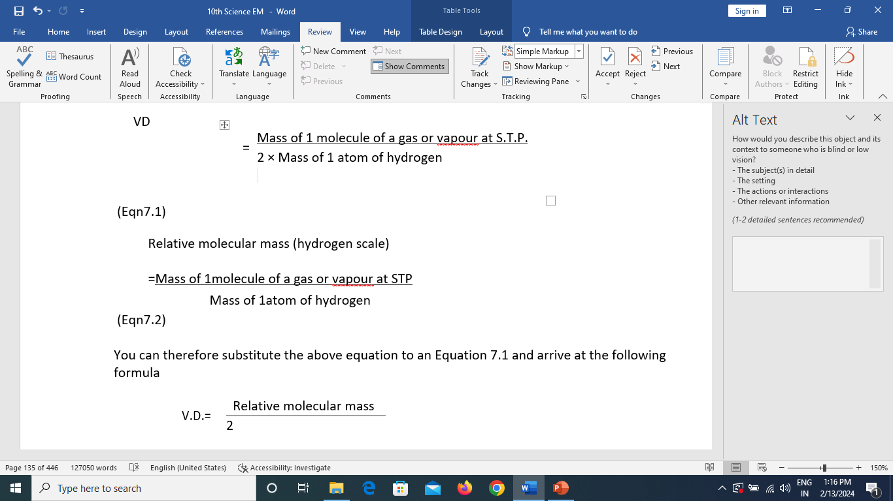
(Equation7.1)Relative molecular mass (hydrogen scale)
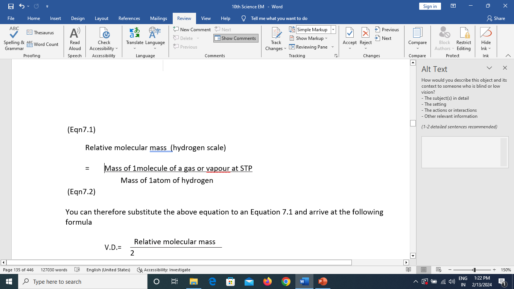
(Equation 7.2)
You can therefore substitute the above equation to an Equation 7.1 and arrive at the following formula
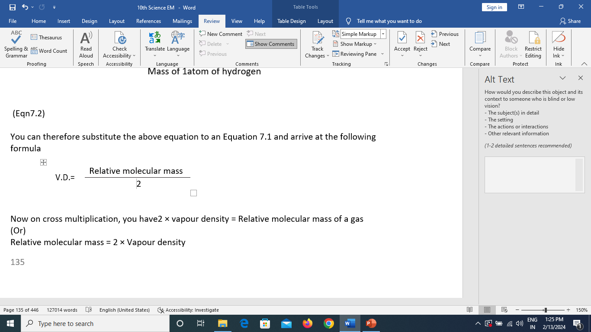
|
Now on cross multiplication, you have 2 * vapour density equal to Relative molecular mass of a gas
(Or)
Relative molecular mass = 2 * Vapour density
I. Calculation of molecular mass
Calculate the gram molecular mass of the following.
1) H2 O
2) C O2
3) C a3 (P O4) twice
Solution:
1) H2 O
Atomic masses of H = 1, O = 16
Gram molecular mass of H2 O
= (1×2) + (16×1)
= 2+16
Gram molecular mass of H2 O=18 gram
2)C O2
Atomic masses of C=12, O=16
Gram molecular mass of C O2
= (12×1) + (16×2)
= 12+32
Gram molecular mass of C O2 = 44 gram
3)Ca3 (P O4) twice
Atomic masses of C a=40, P=30, O=16.
Gram molecular mass of Ca3(P O4) twice
= (40×3) + [30+(16×4)] × 2
=120+(94×2)
=120+188
Gram molecular mass of C a 3(P O4) twice = 308 gram
2. Calculation based on number of moles from mass and volume
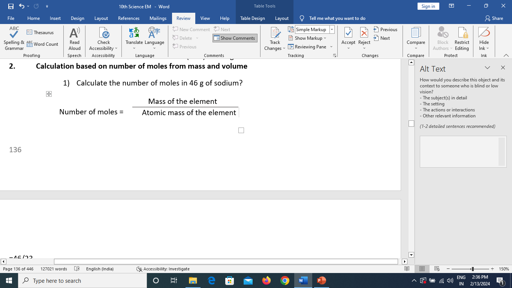
= 46 divided by 23
= 2 moles of sodium
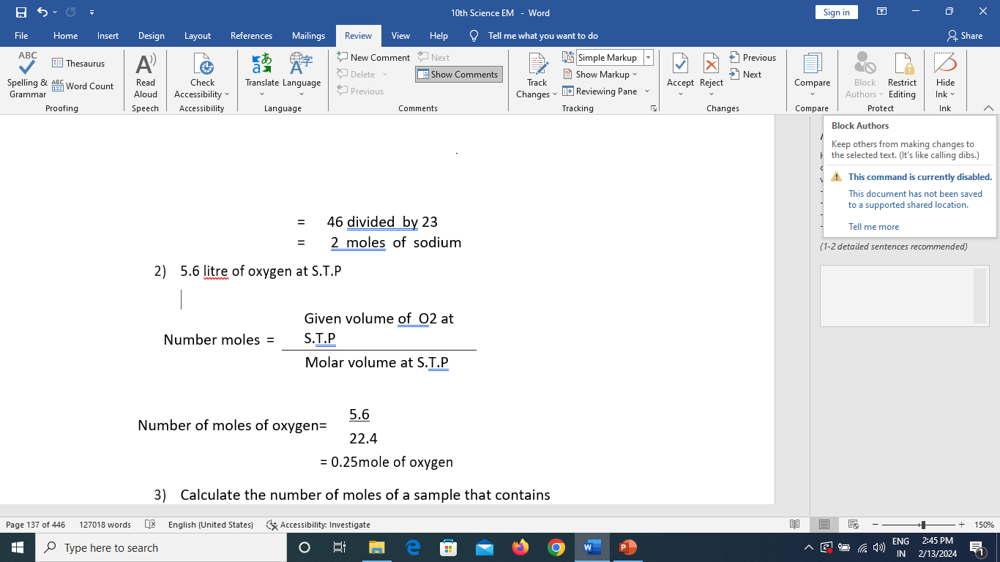
|
|
Number of moles of oxygen is 5.6 divided by 22.4 is equal to 0.25 moles of oxygen |
|
|
|
12.046 × 10 power 23 atoms of iron ?
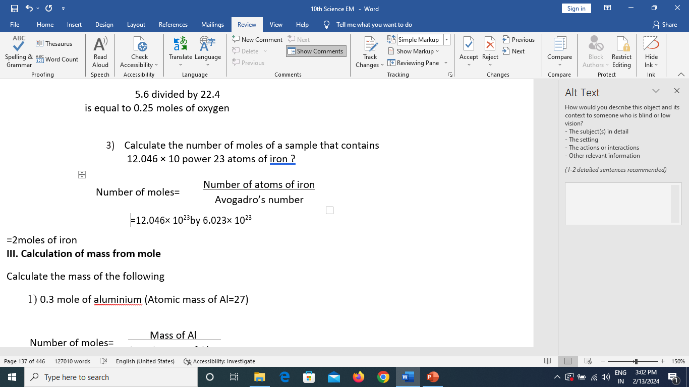
|
|
|
= 12.046 × 10 power of 23 by 6.023× 10 power of 23
= 2 moles of iron
3. Calculation of mass from mole
Calculate the mass of the following
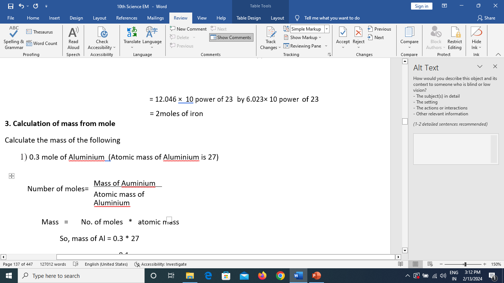
|
|
|
Mass = No. of moles multiplied by atomic mass
So, mass of A l = 0.3 multiplied by 27
= 8.1 gram
2.24 litre of S O2 gas at S. T. P
Molecular mass of S O2 = 32 + (16×2)
= 32 + 32 =64
Number of moles of S O2 = |
Given volume of S O2 at S. T. P divided by Molar volume SO2 at S. T. P |
Number o fmoles of S O2 = 2.24BY 22.4 |
|
|
= 0.1mole
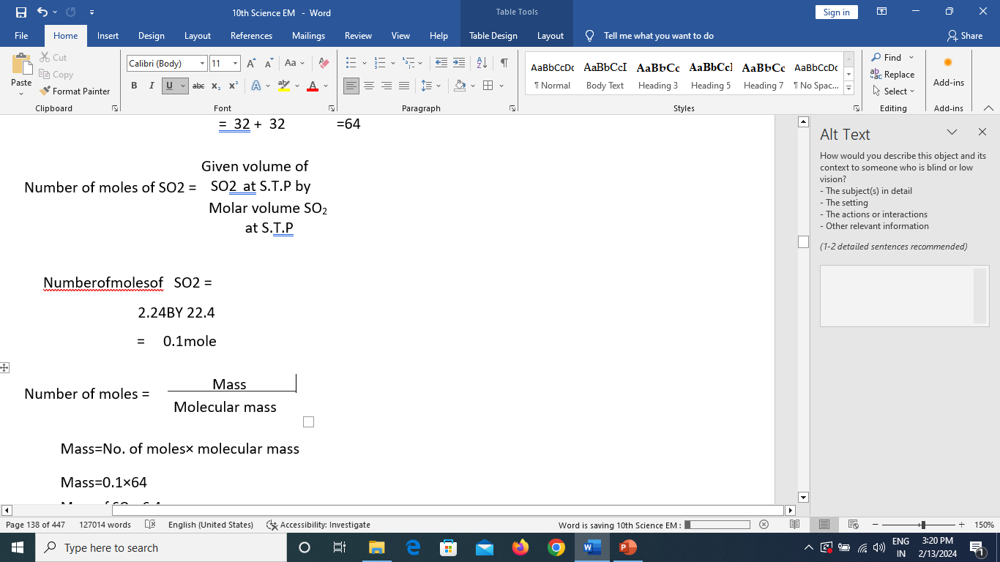
|
|
|
Mass = No. of moles multiplied by molecular mass
Mass = 0.1x64
Mass of S O2 = 6.4 gram
Molecular mass of H2 O=18
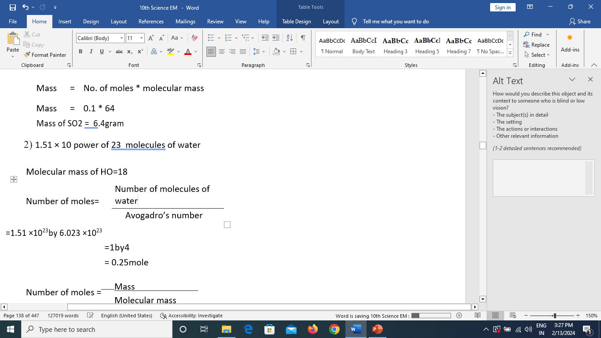
= 1.51 ×10 power of 23 by 6.023 ×10 power of 23
= 1 by 4
= 0.25 mole
0.25 = mass by 18
Mass = 0.25×18
Mass = 4.5gram
Molecular mass of glucose = 180
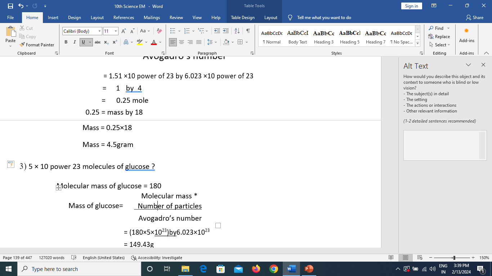 |
|
|
= (180*5 *10 power of 23 )by 6.023 *10power of 23
= 149.43gram
IV. Calculation based on number of atoms or molecules.
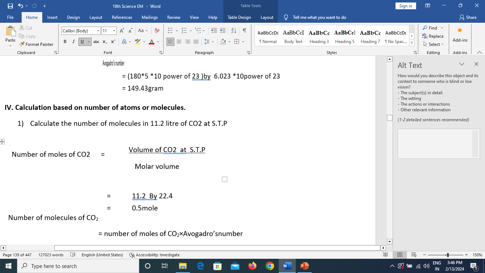
|
|
|
= 11.2 By 22.4
= 0.5mole
Number of molecules of C O2
= number of moles of C O2 * Avogadro’snumber
= 0.5 * 6.023 * 10 power of 23
= 3.011 * 1o power of 23 molecules of C O2
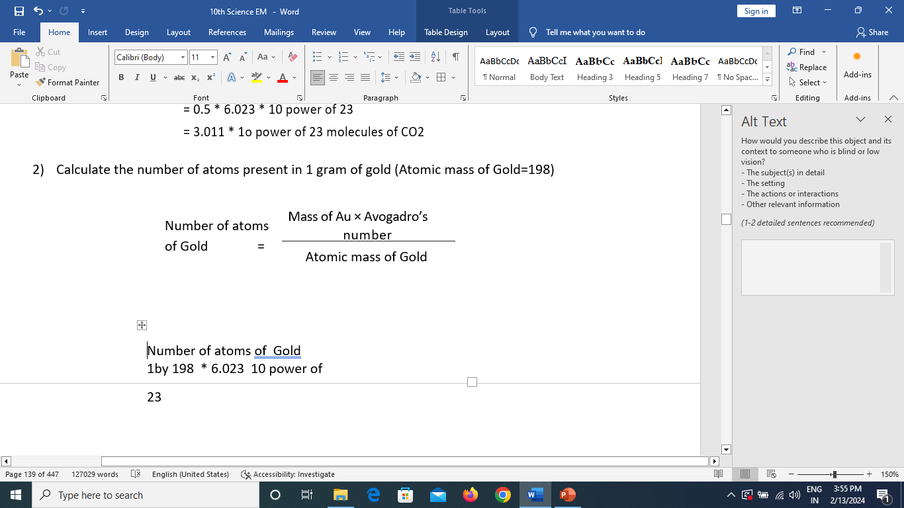
|
|
|
Number of atoms of Gold
|
1 by 198 multiplied by 6.023x10 power of 23 |
Number of atoms of
Gold = 3.042x10 power of 23 gram
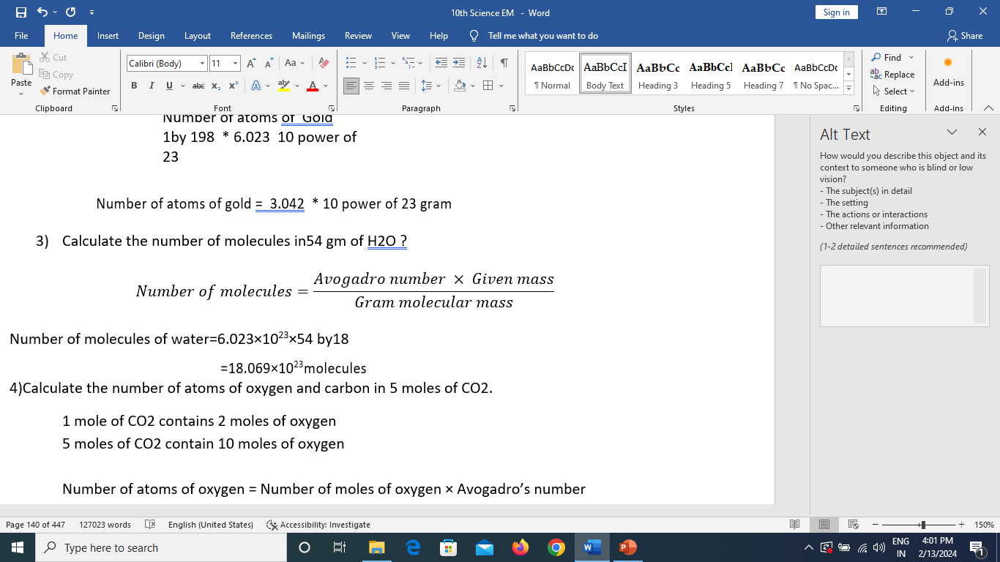
Number of molecules of water = 6.023x10 power of 23 in to 54 divided by18
= 18.069x10 power of 23 molecules
4)Calculate the number of atoms of oxygen and carbon in 5 moles of C O2.
1 mole of C O2 contains 2 moles of oxygen
5 moles of C O2 contain 10 moles of oxygen
Number of atoms of oxygen = Number of moles of oxygenxAvogadro’s number
= 10x6.023x10 power 23
= 6.023x10 power 24 atoms of Oxygen
1 mole of C O2 contains 1 mole of carbon
5 moles of C O2 contain 5 moles of carbon
No. of atoms of carbon= |
No. of moles of carbonxAvogadro’s number |
= 5x6.023x1O power of 23 =3.011x10 power of 24 atoms of Carbon
5. Calculation based on molar volume
Calculate the volume occupied by:
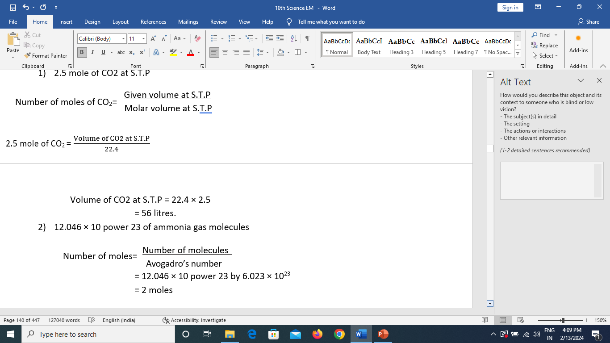
|
|
|
Volume of CO2 at S.T.P = 22.4 × 2.5
= 56 litres.
Number of moles= |
Number of molecules |
Avogadro’s number |
= 12.046 × 10 power 23 by 6.023 × 10 power of 23
= 2 moles
Volume occupied by N H3
= number of moles × molar volume
= 2 × 22.4
= 44.8 litres at S. T. P
Number of moles = 14 by 28
= 0.5mole
Volume occupied by N 2 at S. T. P
= number of molesxmolar volume
= 0.5 x 22.4
= 11.2 litres.
6. Calculation based on % composition
Calculate % of Sulpher in H2S O4
Molecular mass of H2S O4
= (1 × 2) + (32 × 1) + (16 × 4)
= 2 + 32 + 64
= 98 gram
% of Sulphur in H2S O4 = mass of sulphur divided by molecular mass of H2 S O4 100
= 38 divided by 98 100 = 32.65%